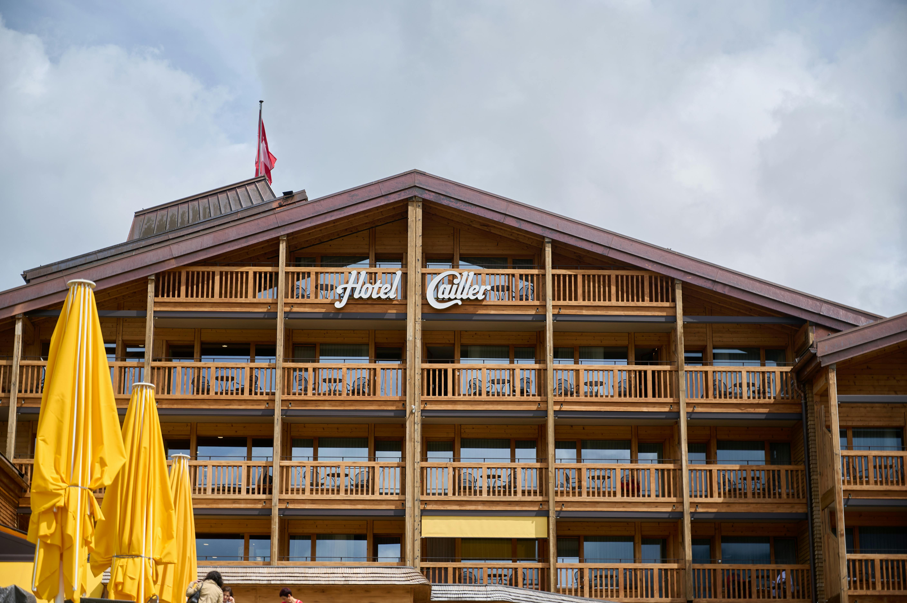
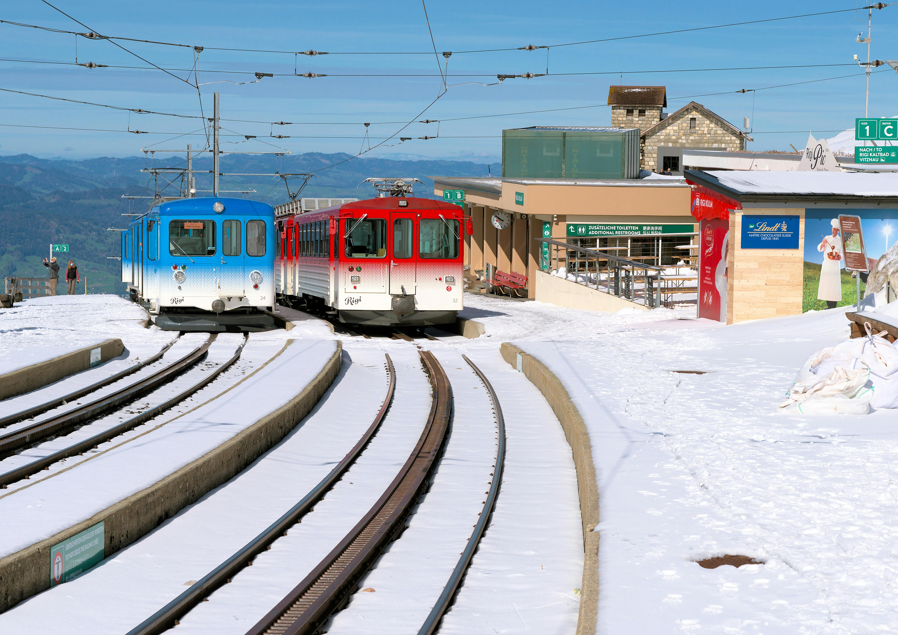
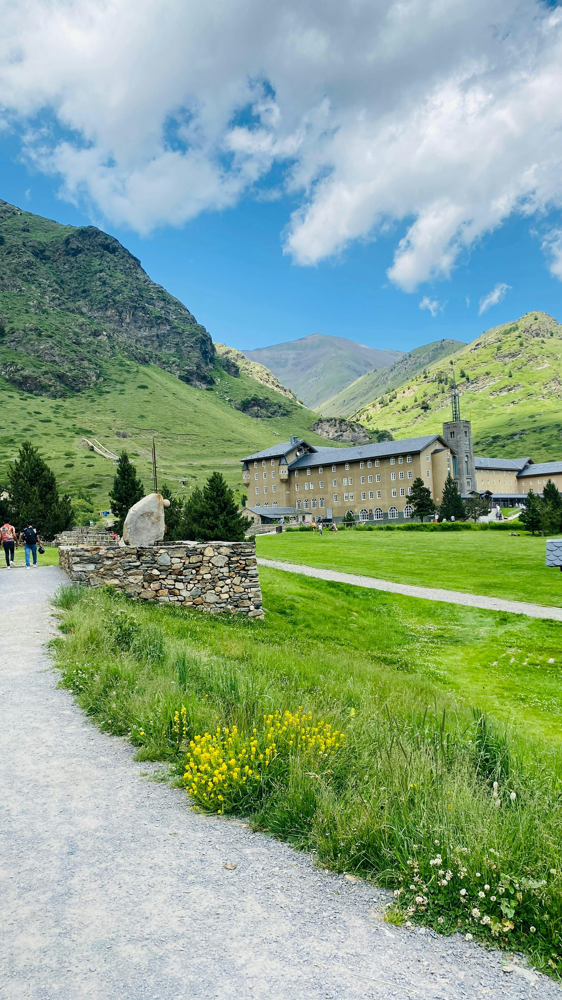
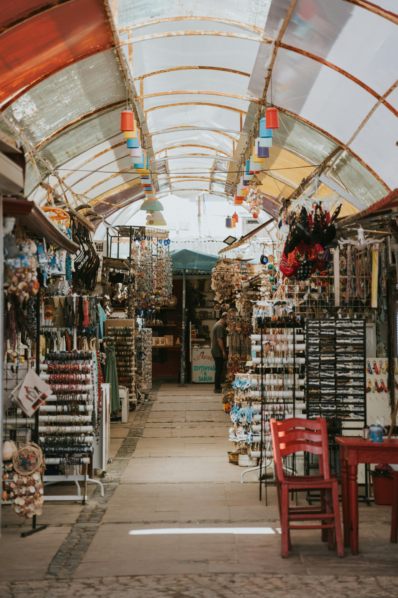

Best Travel Tips

- Best time to visit: Spring (April to June) and Autumn (September to October) for mild weather and fewer tourists.
- Public transport is efficient; consider getting a Swiss Travel Pass for unlimited travel on trains, buses, and boats.
- Always check the weather; it can vary greatly in different regions, especially in the mountains.
- Learn a few basic phrases in German, French, or Italian to enhance your experience and interact with locals.
- Embrace the Swiss punctuality; arrive on time for train schedules and reservations.
- Keep Swiss Francs (CHF) handy as not all places accept credit cards, especially in rural areas.
- Respect local customs, such as keeping noise levels down in residential areas and not walking on grass in parks.
Best Cuisines and Dining Recommendations

Switzerland is famous for its delicious cheese and chocolate. Must-try dishes include:
- Fondue: Melted cheese served with bread, perfect for sharing with friends.
- Rösti: A crispy potato dish, often served as a side or main.
- Raclette: Melted cheese scraped onto potatoes and vegetables.
- Zopf: A traditional braided bread enjoyed on Sundays.
- Swiss Chocolate: Sample pralines and truffles from local chocolatiers.
Best Accommodation Options
- Luxury Hotels: The Dolder Grand (Zurich), Badrutt's Palace (St. Moritz).
- Mid-Range Hotels: Hotel des Balances (Geneva), Hotel Adler (Zurich).
- Hostels: Youth Hostels in major cities offer budget-friendly options.
- Chalets: Experience staying in traditional Swiss chalets in ski resorts.
Best Local Culture and Traditions

Switzerland has a rich cultural heritage, influenced by its four official languages. Key cultural elements include:
- Traditional Music: Folk music and yodeling are integral to Swiss culture.
- Festivals: Events like Fasnacht (Carnival) and the Fête de l'Escalade celebrate local traditions.
- Art and Architecture: Explore works from renowned Swiss artists and visit historical buildings.
- Cuisine: Swiss food reflects regional influences, emphasizing local ingredients.
Best Top Tourist Attractions

- Lake Geneva: Offers stunning views and water activities.
- The Matterhorn: Iconic mountain for skiing and hiking.
- Jungfraujoch: High-altitude train ride with breathtaking views.
- Lucerne: Known for its preserved medieval architecture.
- Bern: The capital city with a UNESCO World Heritage site status.
Best Transportation Guides
Switzerland has an extensive and efficient public transportation network:
- Trains: Operated by Swiss Federal Railways, connecting major cities.
- Buses: Postbuses access remote areas and scenic routes.
- Trams: Cities like Zurich and Basel have excellent tram systems.
- Cycling: Many cities offer bike rentals for easy exploration.
Best Outdoor Activities and Adventure
Switzerland is a paradise for outdoor enthusiasts:
- Hiking: Marked trails for all skill levels, especially in the Swiss Alps.
- Skiing: World-class resorts in Zermatt, Verbier, and St. Moritz.
- Paragliding: Experience stunning views of mountains from the air.
- Lake Activities: Kayaking and swimming in Lake Geneva and Lake Lucerne.
Best Shopping and Souvenirs
Don't miss out on shopping for unique Swiss products:
- Swiss Chocolate: Purchase famous brands like Lindt and Toblerone.
- Watches: Invest in quality Swiss watches from brands like Rolex and TAG Heuer.
- Cheese: Bring home some local cheeses like Emmental and Gruyère.
- Traditional Crafts: Look for handcrafted items like wooden figurines and textiles.
Best Weather and Best Time to Visit

Switzerland experiences varied weather, influenced by its mountainous terrain:
- Spring (April to June): Mild temperatures; great for hiking and outdoor activities.
- Summer (July to August): Warm weather; ideal for exploring cities and lakes.
- Autumn (September to October): Beautiful fall colors; fewer tourists.
- Winter (November to March): Cold and snowy; perfect for skiing and winter sports.